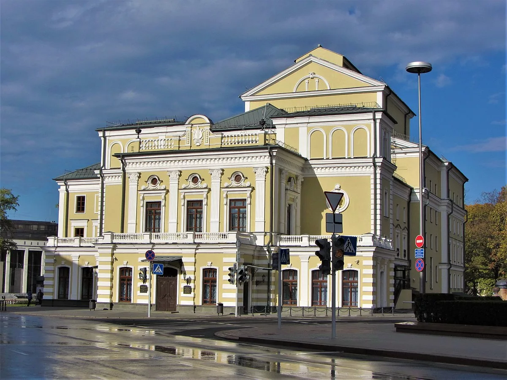
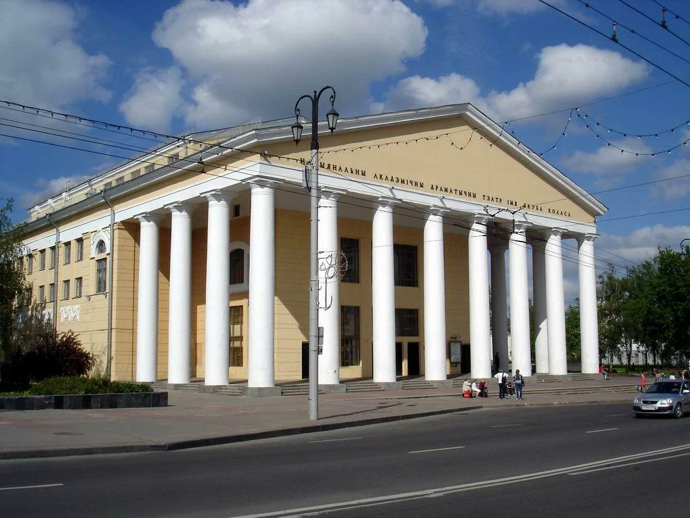
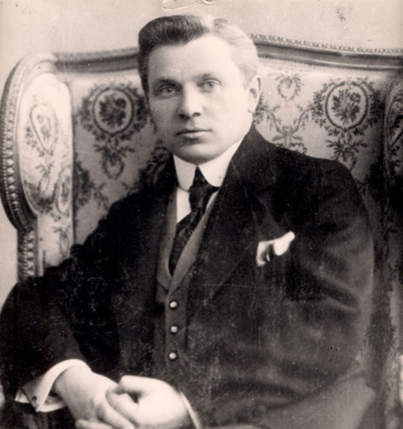
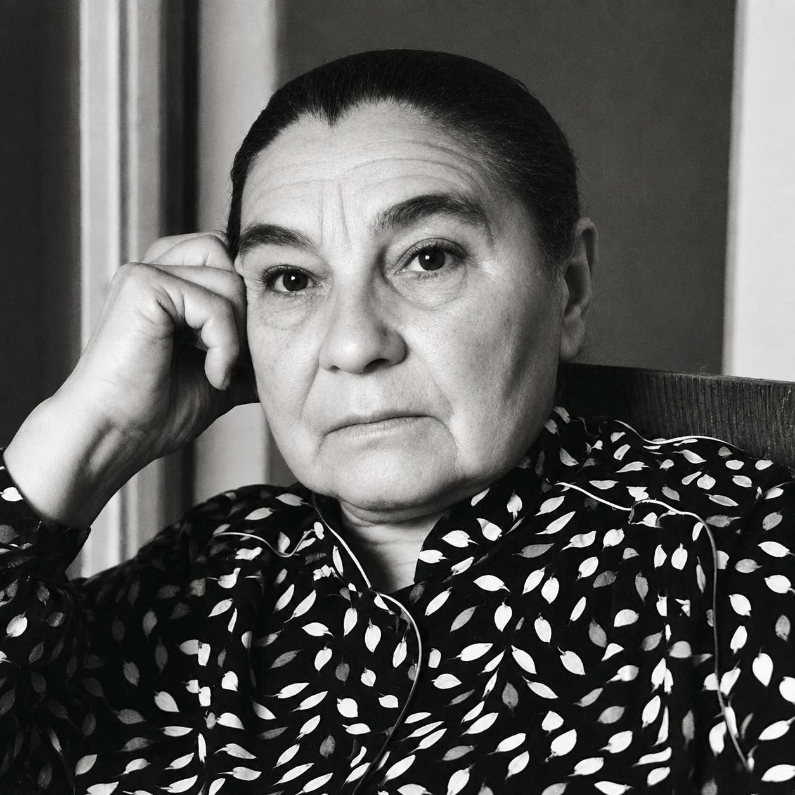

Театр Беларуси XX века
XX век стал для белорусского театра временем драматических перемен: от первых профессиональных государственных театров до сложных процессов идеологического давления и поиска национального стиля. Этот период вместил в себя революцию, войну, послевоенное восстановление и постепенное формирование того театрального ландшафта, который мы знаем сегодня.
Рождение профессионального театра

Национальный академический театр имени Янки Купалы
Театр XX века начинается с любительских кружков и гастрольных трупп начала столетия. Ещё весной 1917 года было создано Первое белорусское товарищество драмы и комедии, которое действовало до середины 1920 года под руководством Флориана Ждановича. Параллельно выступала труппа «Белорусского народного театра» под руководством Франтишка Олехновича. Именно на базе участников этого товарищества в 1920 году началось формирование первой государственной сцены.
В сентябре 1920 года состоялось открытие Первого Белорусского государственного театра (БГТ-1) – ныне Национальный академический театр имени Янки Купалы. На открытии давали инсценировку повестей Э. Ожешко «Рысь», «Свадьбу» А. Чехова и пьесу «Люди» Шолом-Алейхема. С первых же постановок в театре утверждался глубокий национальный репертуар – произведения Я. Купалы и Е. Мировича, среди которых «Кастусь Каліноўскі» и «Каваль-ваявода».
БГТ-1 был не только драматической, но и музыкальной сценой: при нём работали хор и оркестр. Долгие годы художественным руководителем театра оставался Е. Мирович. На этой сцене выросли легендарные актёры национальной школы: Ольга Галина, Глеб Глебов, Генрих Григонис, Владимир Крылович, Екатерина Миронова, Борис Платонов, Лидия Ржецкая, Владимир Владомирский.

Национальный академический драматический театр имени Якуба Коласа
В августе 1920 года в Минске начала деятельность «Труппа белорусских артистов» под руководством Владислава Голубка, которая в 1926 году была реорганизована в Белорусский государственный передвижной театр. Спектакли, которые коллектив давал по всей Беларуси, были яркими, наполненными народной музыкой, песнями и танцами. Труппа пользовалась колоссальной любовью зрителей, а её создателю В. Голубку в декабре 1928 года первому в республике было присвоено звание народного артиста БССР.
Для подготовки профессиональных кадров в сентябре 1921 года в Москве была основана Белорусская драматическая студия. В 1926 году на базе её выпускников в Витебске открылся Второй Белорусский государственный театр (БГТ-2) – ныне Национальный академический драматический театр имени Якуба Коласа. В его труппу вошли такие мастера, как Янина Глебовская, Александр Ильинский, Елена Лаговская, Павел Молчанов, Константин Санников и Стефания Станюта.
Театр 1920-х годов был тесно связан с процессами белорусизации. Однако уже на исходе десятилетия началось жёсткое идеологическое давление. Партийные органы установили прямой контроль над репертуаром, требуя обязательной постановки пьес советских авторов в переводе на белорусский язык («Разлом» Б. Лавренёва, «Бронепоезд 14-69» Вс. Иванова). Постепенно самобытный национальный репертуар стал вытесняться строго регламентированными идеологическими пьесами.
Театр в годы Великой Отечественной войны и послевоенный подъём
В годы Великой Отечественной войны театральная жизнь Беларуси не прекратилась. Труппы были эвакуированы вглубь СССР, где продолжали творческую деятельность. Непосредственно на передовой и в партизанских отрядах действовали фронтовые театральные бригады. После освобождения БССР в 1944 году театры вернулись в родные города, началось восстановление разрушенных зданий.
В послевоенный период белорусский театр пережил новый триумф. В сезоне 1944/45 года в республике работало уже 12 театров. При театрах имени Я. Купалы и имени Я. Коласа открылись новые студии. В 1948 году с блестящим успехом прошла премьера спектакля «Константин Заслонов» по пьесе А. Мовзона. Актёры Борис Платонов, Глеб Глебов, Ирина Жданович, а также режиссёр Константин Санников были удостоены за него Сталинской премии.
Театр в послевоенные десятилетия (1960-1980-е годы)
В 1960-1980-е годы театральное искусство становится жанрово разнообразным. Развиваются музыкальный театр, театр кукол и экспериментальные формы. «Оттепель» конца 1950-х – 1960-х годов привнесла новые веяния в Купаловский театр. Постановки Б. Эрина, а также молодых режиссёров новой волны – Б. Луценко и В. Раевского – объединили лучшие традиции академизма и авангардного новаторства.
В 1970-1980-е годы на сцене блистали такие великие актёры, как Галина Макарова, Ростислав Янковский, Лилия Давидович, Виктор Тарасов. Театр превратился в пространство для глубокого общественного диалога, где открыто поднимались сложные вопросы истории и современности.
Театр на рубеже веков
В конце 1980-х – начале 1990-х годов, в период перестройки и после обретения Беларусью суверенитета, театральная сфера столкнулась с новыми вызовами. С одной стороны, пришла долгожданная свобода творчества, позволившая ставить ранее запрещённые произведения. С другой – наступили серьёзные экономические трудности.
В это время возникают первые независимые театральные коллективы и экспериментальные студии, которые заложили основу для формирования современного белорусского театрального искусства.
Ключевые имена XX века

Евстигней Мирович
Игнат Буйницкий – актёр, режиссёр и театральный деятель, создатель Первой белорусской труппы (1907), основоположник национального профессионального театра, «отец белорусского театра».
Евстигней Мирович – выдающийся режиссёр, драматург, руководитель БГТ-1, заложивший основы белорусской профессиональной режиссуры.
Владислав Голубок – актёр, драматург, создатель уникального передвижного театра, ставший первым в истории народным артистом БССР (1928).
Глеб Глебов – один из величайших актёров национальной сцены, виртуоз перевоплощения, лауреат Сталинских премий.
Стефания Станюта – великая актриса БГТ-2 (театра им. Якуба Коласа), а затем Купаловского театра, ставшая подлинным духовным символом белорусской сцены.
Борис Платонов – народный артист СССР, ведущий актёр и режиссёр Купаловского театра, воплотивший на сцене эталонные образы эпохи.
Галина Макарова – легендарная актриса Купаловского театра, народная артистка СССР, снискавшая огромную всесоюзную любовь.
Ростислав Янковский – выдающийся актёр театра и кино, народный артист СССР, многолетний ведущий мастер Государственного академического русского драматического театра имени М. Горького в Минске.

Галина Макарова